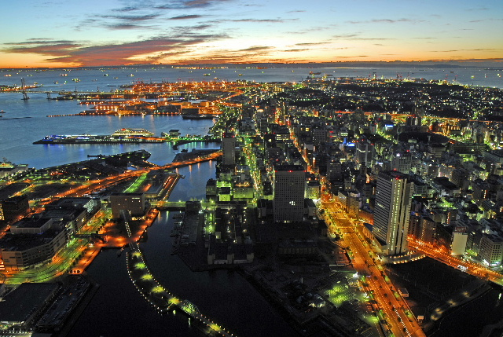

|


SEANET HISTORY

 [SEANET HISTORY] [SEANET HISTORY]
The South East Asia Amateur Radio Network (SEANET) was established in 1964 on 20m (14.320 MHz plus or minus QRM). The objective of this Net is to promote international understanding and fellowship among hams and to relay emergency, medical, urgent or priority traffic. This on-the-air meeting which has taken place without fail daily at 1200 UTC has strengthened unity and co-operation among Hams around the world, especially those within the region. The net also provides Hams a facility for testing their equipment and propagation conditions on the 20m band
The first convention or eyeball QSO of SEANET took place on the island of Penang, Malaysia, in December 1971 when about 30 amateurs met. Present at that historic meeting were the first Net Controller Paddy Gunasekera 4S7PB of Sri Lanka and stalwarts 'Big John' van Leader 9M2IR, 9V1OQ, HS1AIR, Ebbey Lucas 9V1QG of Singapore and Eshee Razak 9M2FK of Malaysia. The subsequent Conventions were held in the following countries:
1st: 1971 Penang, Malaysia 11th: 1981 Jog Jakarta, Indonesia 21st: 1993 Dhaka, Bangladesh 2nd: 1972 Bangkok, Thailand 12th: 1982 Bangkok, Thailand 22nd: 1994 Malacca, Malaysia 3rd: 1973 Singapore 13th: 1983 Singapore 23rd: 1995 Koh Samui, Thailand 4th: 1974 Manira, Philippies 14th: 1984 Penang, Malaysia 24th: 1996 Madoras, India 5th: 1975 Kuala Lumpur, Malaysia 15th: 1985 Cebu, Philippies 25th: 1997 Darwin, Australia 6th: 1976 Jakarta,Indonesia 16th: 1986 Bangkok, Thailand 26th: 1998 Singapore 7th: 1977 Bangkok, Thailand 17th: 1989 Singapore 27th: 1999 Bandar Sari Begawan 8th: 1978 Singapore 18th: 1990 Kuching, Malaysia 28th: 2000 Pattaya, Thailand 9th: 1979 Penang, Malaysia 19th: 1991 Chiang Mai, Thailand 29th: 2001 Kota Kinabalu, Malaysia 10th: 1980 Manira,Philippins 20th: 1992 Darwin, Australia 30th: 2002 Parth, Australia 31st: 2003 Johor Bahru, Malaysia 41st: 2013 Yokohama, Japan 32nd: 2004 Bankok Thailand 42nd: 2014 Bali,Indonesia 33rd: 2005 Bangalore, India 43rd: 2015 Alapuzha India 34th: 2006 Osaka(Kansai), Japan 44th: 2016 Pattaya Thailand 35th: 2007 Lampang, Thailand 45th: 2017 Cambodia 36th: 2008 Kota Kinabalu, Malaysia 46th: 2018 Yogyakarta,Indonesia 37th: 2009 Seoul, Korea 47th: 2019 Johor Bahru, Malaysia 38th: 2010 Shanghai, China 48th: 2020 Thiland 39th: 2011 B.S.B, Brunei 49th: 2021 China 40th: 2012 Kuala Lumpur, Malaysia |
|
SEANET OR SEA NETWORK - A COMMUNICATIONS LIFELINE
A Network, as we commonly know, is "any structure in the form of a net". Therefore the average layman may well wonder what a Sea Network or SEANET (for short) is. It has nothing to do with the Sea or anything with the remotest connection to it except that it stretches over the Oceans to form a regular communications network; on many an occasion, much more reliable than the usual official communications channels available to nations. The South East Asia Net (SEANET)is a group of painstaking and dedicated Amateur Radio Operators (Radio Hams) mostly in South and South East Asia and Oceania,that meets as a group every evening (1200 hours Zulu), via Radio. The Amateur Radio Service is one that has Consultative status with the United Nations. The Radio Ham is one whose purpose is self training and Education in Radio. It is a great hobby to well over 500,000 Radio Hams in the world. Many a new development in design and technique have been conceived sprouting, from the fertile minds of Radio Hams pursuing their hobby. Short-wave broadcasting was triggered by Radio Hams. On any day one could tune in (10, 15, 20, 40, 80 metres) and hear the Radio Hams talking, discussing and arguing about many things some ideas that will eventually blossom out to encompass the whole communications industry and possibly affect the lives and life styles of the many billions of other ordinary people, in many lands. SEANET was born on November 29,1963 when a small group of Radio Hams in South East Asia felt that they could get together on the Air, daily, to have a chat. From these small beginnings was born a group that was eventually to span the globe. They talked of the weather, technical problems, new ideas, about one another's families and themselves their hopes and aspirations. The first group consisted of a handful of Hams representing Nepal, Laos, Philippines and Malaysia. Every day at the pre-agreed time their radios would be tuned to the same spot and they would chat amongst themselves. One by one, more Hams from South East Asia joined in on this daily schedule. But a problem arose; that of the time difference. When it was found that Hams in Hong Kong and the Philippines felt it convenient to meet just after coming home from their offices in the evenings, it was discovered that those in the countries such as Nepal and Malaysia were still at work. The group made a number of adjustments and finally found that 1200 GMT was quite convenient for most (1200 GMT or Noon time GMT is 5.30 p.m.in India/Sri Lanka, 7.30 p.m. in Singapore/Malaysia, 8.00 p.m. in Hong Kong, 8.00 p.m. in the Philippines, etc.) The number of these Hams meeting daily, has grown from the modest half-dozen or so in 1963 to over 75 in 1975. On some occasions there have been as many as 120 stations in the Network. Let us look at what happens on a typical evening on SEANET. At a few minutes before 1200 GMT, the Net Control Station (NCS) Paddy Gunasekara 4S7PB from Sri Lanka has been the regular NCS for the past 7 years (from 1968 to 1974) switches on his Radio equipment, and while allowing it to warm up, checks his clock with the Standard Time Broadcast heard in his country Having synchronised watches (so to say) he looks around the radio spectrum assigned to the Hams on 14 MHz (20 metres) to ascertain interference free channels that SEANET members could use if they want to chat with each other. At 1200 GMT, the NCS calls the Net to order, and after ascertaining whether there are any urgent matters to be dealt with, goes on to call in country by country, to report into the SEANET. One by one you could hear these countries of the Orient, in their unmistakable accents, reporting in to the NCS or Net Control Station. Laos, Vietnam, Thailand, Malaysia, Singapore, Indonesia, Brunei, Sarawak, Hongkong, Macao, Bhutan, Sikkim(ex-AC3), Christmas Islands, Andaman Island, Mauritius and Seychelles are some of those one could hear. When one station operator wishes to speak to a friend from another land, he informs the NCS and the NCS assigns them a spot or channel which is free from other interference and they then talk to each other and discuss their own matters of interest. On a typical day now, one may count as many as 75 Stations on the Net representing around 25 countries in Asia, Africa, Oceania and the Middle East. Stations from afar such as England, Ivory Coast, Sweden, U.S.A., Central and South America, Caribbean, South Pole, etc. are also heard often. Entirely apart from the hobby value-some wives feel that this hobby at least keeps the man at home rather than out there is also the value of the SEANET as an Emergency communications network. There have been many a private Yacht in the Indian Ocean that had been helped via the SEANET and Amateur Radio. Once there was this small Tri-maran which had exhausted all its fuel, food and water and were drifting helpless. Radio Hams and SEANET alerted rescue services and succeeded in getting an Ocean liner to divert and drop off fuel, food and water. There have been other impressive achievements to the credit of SEANET. There was the case of a young mother in Sri Lanka whose baby of a few days had a serious condition which could only be treated by a special drug not available locally. SEANET members looked in the likely places in Australia and Singapore but failed. They then contacted their friends in the U.S.A. and succeeded in getting the drug flown out from California the baby was saved. There was also the case of the frantic father who could not be near at hand when his wife was delivery their first baby in a Singapore hospital, over a thousand miles away from his jungle location. He kept in touch via Ham radio and SEANET. The wife, in hospital, had friends from SEANET visit every day. On another occasion, when disaster struck Darwin, Australia recently, wiping off all communications facilities, a member of the SEANET group living in Darwin set up his station and was one of the first to contact the National Authorities with news and requests. Another SEANET member in Sri Lanka was able to obtain details of the whereabouts and health etc. of his countrymen living in Darwin and so reassure their near and dear in Sri Lanka. There was once also the team of Himalayan climbers who attacked Mt. Everest from a new direction and when success was first conveyed via Amateur Radio and SEANET. The good Samaritan spirit of Amateur Radio, during national calamities, etc. is legion. The members of this wide ranging group of Radio Hams in South East Asia and the nearby countries have their share of Emergency service to be proud of. Realising that Amateur Radio usually means that one Ham comes to know another only by voice (Amateur Slow Scan TV is changing this too) the SEANET group decided a few years ago that they should meet once a while, face to face. SEANET Conventions is the result. There have been SEANET Conventions in Penang (Malaysia), Bangkok, Singapore and Manila. The next one is in Kuala Lumpur, Malaysia (7, 8 and 9 November, 1975). Many Radio Hams not only from the SEANET area but from all over the world gather there to meet other Hams and discuss matter of mutual interest. "International understanding and Friendship" may well be the motto of SEANET.
|
** FLASH BACK OF THE PAST SEANET CONVENTION **
 41st 2013
41st 2013 38th 2010
38th 2010 37th 2009
37th 2009 33rd 2005
33rd 2005 32nd 2004
32nd 2004 29th 2001
29th 2001